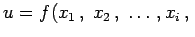
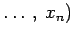
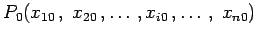
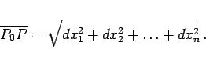

Inhalt Index DeskTop Bronstein

 Differentialrechnung Differentiation von Funktionen von mehreren Veränderlichen Vollständiges Differential und Differentiale höherer Ordnung
Differentialrechnung Differentiation von Funktionen von mehreren Veränderlichen Vollständiges Differential und Differentiale höherer Ordnung


Man nennt eine Funktion von mehreren Veränderlichen   im Punkt  differenzierbar, wenn sich der vollständige Zuwachs der Funktion
um eine beliebig kleine Größe höherer Ordnung unterscheidet als der Abstand
|  | (6.41c) |
Differenzierbar ist jede stetige Funktion von mehreren Variablen, die stetige partielle Ableitungen nach allen ihren Variablen besitzt. Umgekehrt folgt die Differenzierbarkeit einer Funktion nicht aus der bloßen Existenz der partiellen Ableitungen.